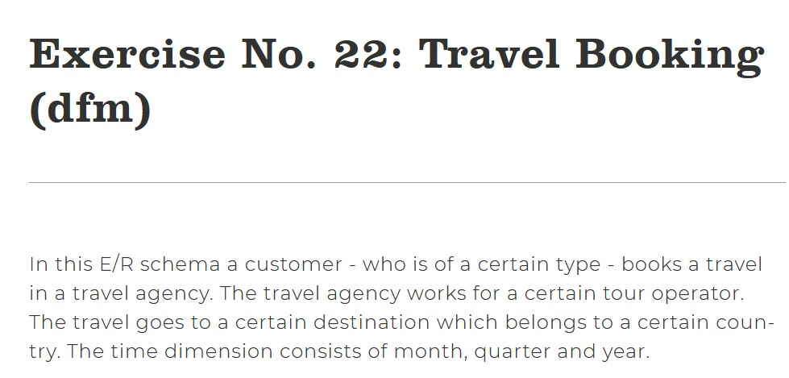
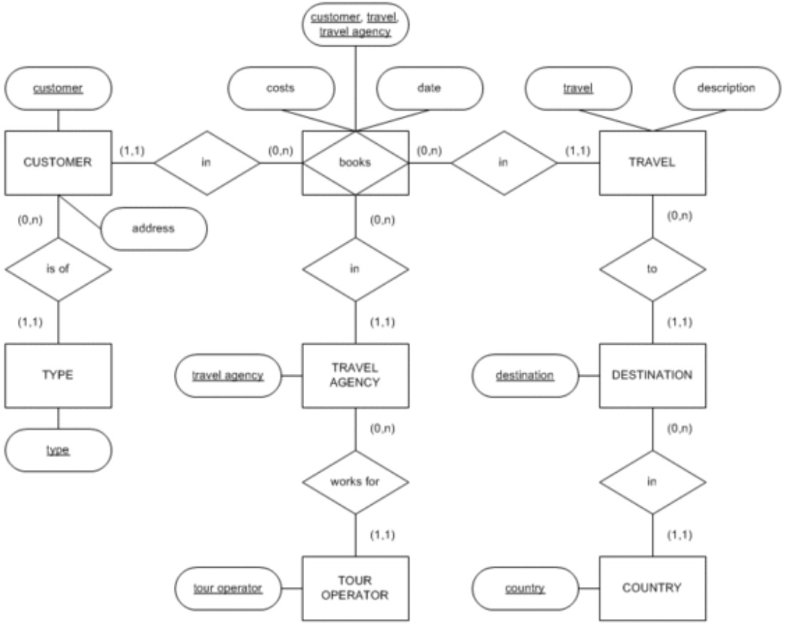
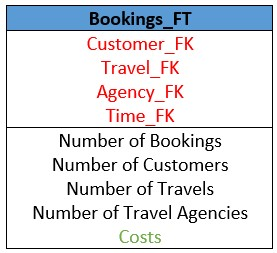

Data Modelling
This is an example of how to create a dimensional data model based on an Entity Relationship diagram and a case scenario. This is actually an excercise published by the Vienna University of Economic and Business on their website. In case you want to take a deeper look of the excercise in the University website, clic Here
 Step 1: Define the Business Processes
What's the process that we are trying to model? Sales, marketing, management, accounting?
Based both on the written description and the schema, it's easy to detect that for this example the Business Process is: booking, more specifically, travel booking
Keep into consideration that sometimes there can be more complex models, with more than one business process involved, but that was not the case for this example.
Besides, if you don't have an ER schema when building your dimensional model, you can detect the process looking for the verbs included in the description.
For this example the verbs that you see are: is, books, works, goes, belongs.
From this verbs, the one that gives you an idea of what we are trying to model is books/booking.
Step 2: Define the Granularity
The granularity indicates the lowest level of information that we will have.
The excercise description is already giving us part of the solution for this step. The last line of the first paragraph, says that the Time Dimension consists of month, quarter and year. Because of this, the lowest level of this dimension is the month. Which as well menas that this model is intended for analysis per month, quarter and year.
For the rest of the details, you have to be able to answer this: How do we want our fact table to be?, what should be represented in each row of our fact table?
The answer for this example would be: The monthly travel bookings made for a customer with a travel agency.
Step 3: Define the Dimensions
Dimensions are logical grouping of attributes and are defined by the granularity.
This are the dimensions that you can find in the example:
-Customers.
-Travels.
-Agencies.
-Time.
Step 3-a): Define the hierarchies
This are the hierarchies that you can find in the example:
Time:
Year.
Quarter.
Month.
Customer:
Type.
Customer.
Destination:
Country.
Destination.
Agency:
Tour Operator.
Agency.
Step 4: Define the Fact Table
The fact table is where we define the facts, which are all the numeric, summarizable columns from the Data Warehouse Some of the metrics that correspond to the fact table and that we can infer from the ER and the problem description are:
-Number of bookings.
-Number of customers
-Number of travels
-Number of travel agencies
-Costs
So, our Fact Table should look like this:
Note that the part in Red defines the relationship between the Fact Table and the dimensions. Furthermore, the cost is the only fact that can be taken explicitelly from the description or the ER schema. The rest are just some ideas of measures that could be added.
Step 5: Building the model
After all previous steps, we are ready to gather everything in a single model, which will look like this: